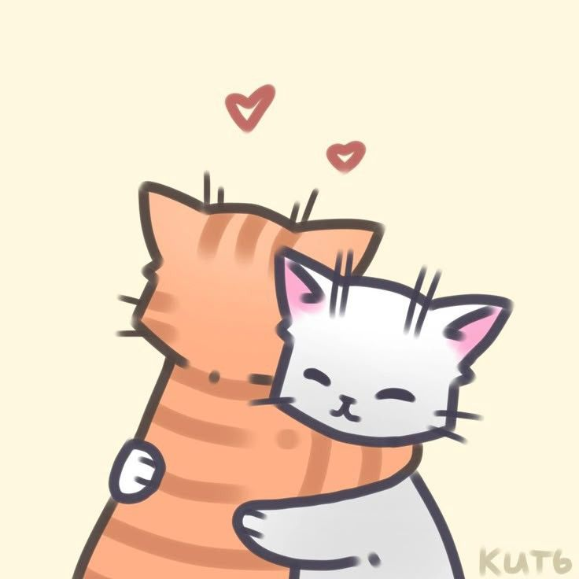
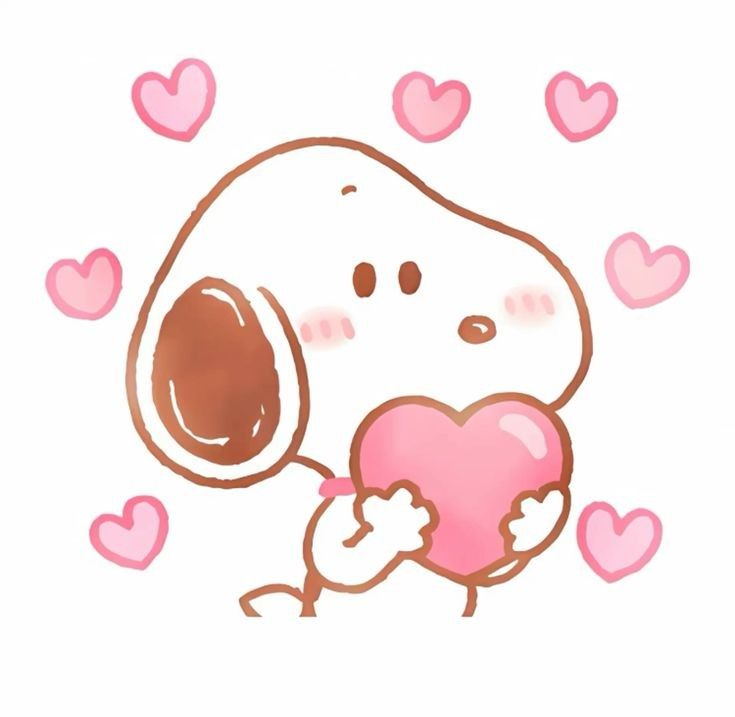
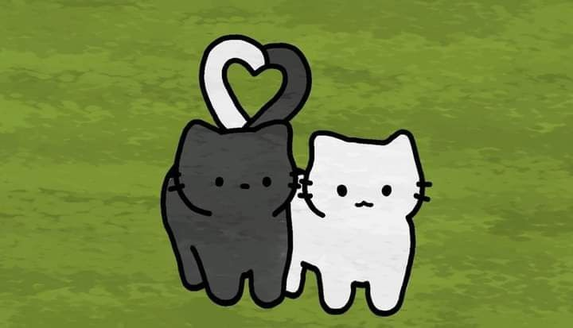

Olaaa mi vida, Hoy me desperté con ganas de escribirte y recordarte lo mucho que significas para mí. Se que por lo regular no soy de darte cartas pero eso no significa que no me nazca escribirte o hacerte una de vez en cuando, solo que me da penita que me juzgues. Así que aquí estoy, aprovechando este momento para expresar todo mi cariño.
Desde que entraste en mi vida, todo ha cambiado para mejor. Eres una persona que me hace feliz como no tienes una idea y que de verdad te amo de una manera tan inexplicable que siento que el decirte un simple te amo se queda muy corto a lo que siento, es algo tan bonita esa sensacion y mas sabiendo que todo eso es por ti, ese sentimiento unico que solo tu me ocasionas hay veces que no me basta decirte te amo quisiera expresarte mucho mas pero no se como.
Tambien quieroo aprovechar porque te quiero decir que valoro muchote nuestra relación. Siempre puedo ser yo mismo contigo, aunque a veces no pueda expersar del todo lo que siento, puedo decir que estoy comodo contigo, cada momento que paso a tu lado soy la persona mas feliz del mundo, esos abrazos que me das me llenan de alegria.
A veces pienso en todas las cosas que hemos vivido hasta ahora y me emociona saber que hay tantas más que podemos pasar. Imaginar los viajes que haremos, las metas que alcanzaremos y todas esas experiencias que viviriamos me llena de alegría. Imaginarnos viviendo juntos es algo que me encantatia no solo imaginar, si no experimentarlo y vivir felices haciendo una familia.
Tambien te quiero agradecer por estar a mi lado en momentos dificiles para mi y quiero decirte q prometo estar a tu lado cuando te encuentres en malos y buenos momentos, celebrando tus triunfos y apoyándote en tus problemas como lo has hecho conmigo.
Te amo más de lo que las palabras pueden expresar, y solo quería recordarte lo especial que eres para mí. Eres una parte fundamental de mi vida, y de las personas mas importantes para mi.TE AMOO
Pdt: TE AMOOOOO MUCHOOOTEEEE, cásate conmigo y tengamos mil hijos.